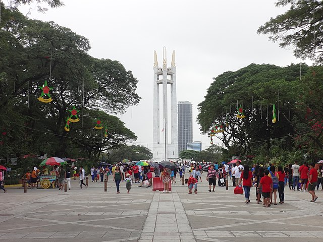

Quezon Memorial Circle
Elliptical Road, Diliman, Quezon City, Philippines

Elliptical Road, Diliman, Quezon City, Philippines
The Quezon Memorial Circle is a national park located in Quezon City, Metro Manila, Philippines. The park is located inside a large traffic circle in the shape of an ellipse and bounded by the Elliptical Road and is the main park of Quezon City (which served as the official capital of the Philippines from 1948 to 1976). Its main feature is a 66-meter (217 ft) tall mausoleum containing the remains of Manuel L. Quezon, the second official President of the Philippines and the first of an internationally recognized independent Philippines, and his wife, First Lady Aurora Quezon. This location will be the street alignment for the approved Manila Metro Rail Transit System Line 7 named Quezon Memorial MRT Station and the station will be underground.
The site was originally intended as the grounds of the National Capitol to be built in Quezon City to house the Congress of the Philippines. The location was also part of a larger National Government Center located around Elliptical Road and the Quezon City Quadrangle (made up of the North, South, East, and West Triangles). The NGC was meant to house the three branches of the Philippine government (legislative, executive, and judicial). While the cornerstone for the structure was laid on November 15, 1940, only the foundations were in place when construction was interrupted by the beginning of the Second World War in the Philippines. After World War II in December 1945, President Sergio Osmeña issued Executive Order No. 79 stipulating the creation of a Quezon Memorial Committee to raise funds by public subscription to erect a memorial to his predecessor, President Manuel L. Quezon.
Quezon City Memorial Circle Zipline. 8AM-9PM. For the adventurous and definitely not for the faint-hearted. Zipline from a height equivalent to about four-stories. The path of the zipline crosses the Pedal N' Paddle Pond. One Zipline station is near the Children's Playground and the other near the Joy of Urban Farming. ₱100 (one way) ₱150 (two way); Senior Citizen rates ₱80 (one way), ₱130 (two way).
Circle of Joy (Children's Playground). A children's playground within the park. The playground features various slides and other attractions such seesaws. The grounds are either covered in concrete or artificial grass which reduces the likelihood of little kids from getting dirty while still having fun.
Circle of Fun. An amusement park within the park. It features various attractions and rides such as the "Fun Drop" a drop tower ride and the "Sea Dragon", a pirate ship type of amusement ride. ₱30 entrance fee (except children below 3 feet (91 cm) and senior citizens).
QMC Bicycle Rental. Bicycles and bicycles with side cars can be rented from a station located near the Children's Playground. The use of the rented vehicles are only for a bicycle track which circles around the Children's Playground.
Pedal N' Paddle. A amusement space featuring bicycle and pedal-powered-boat rentals. ₱20 entrance fee.
Gora 2020. All rights reserved